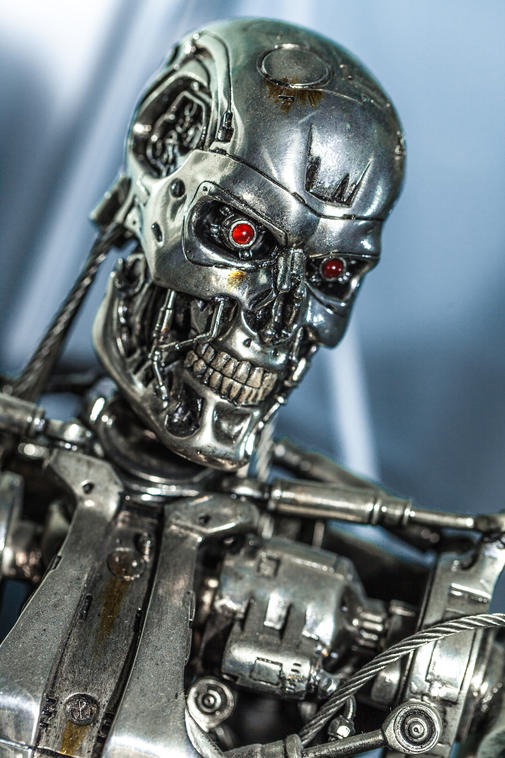
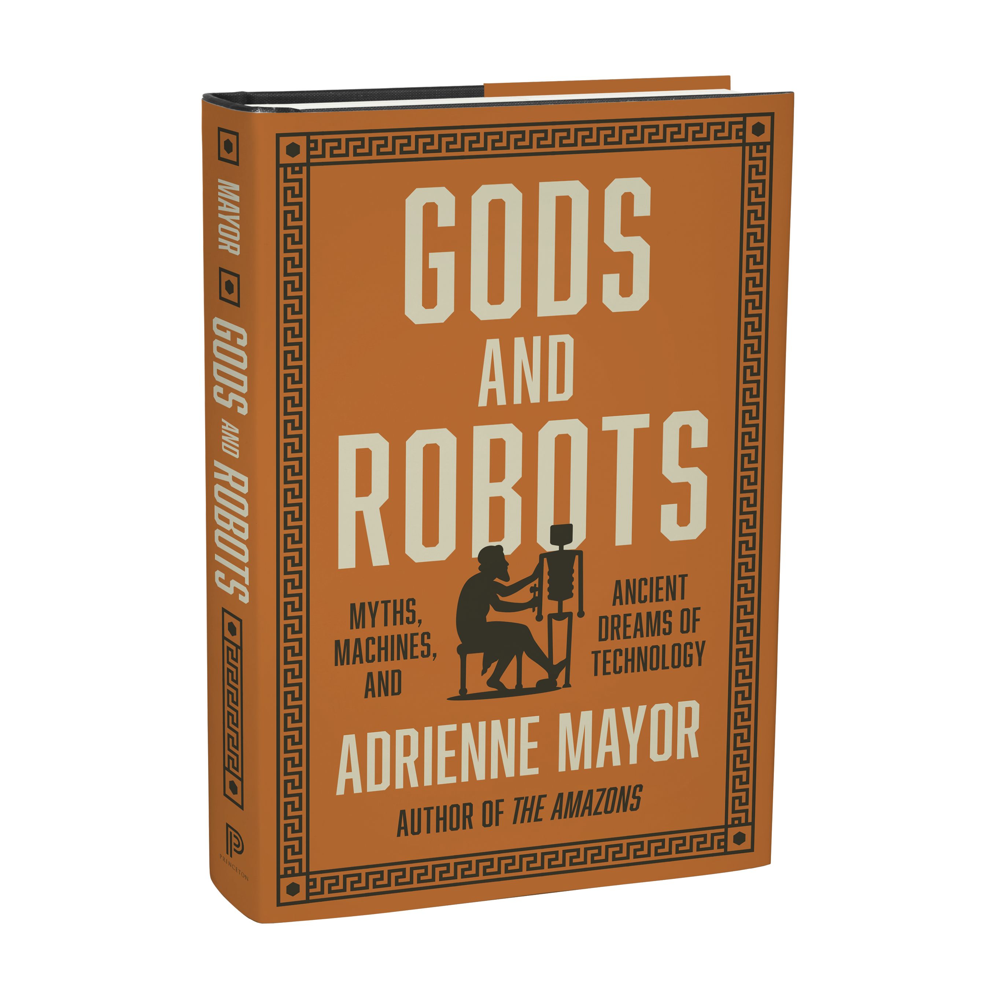

Everyone has a favorite robot or mechanical marvel.
But did you know, deep inside your favorite robot is some DNA from the ancient world?
Long before today's robots, and well before modern sci-fi, an amazing variety of mechanical creations, lifelike automata, and man-created technologies were thought up by the ancients.
We know this because they wove them into stories and painted, carved, and cast them into artworks, and those things last.
Ready to test your robot circuits?
Question #1: The Terminator movies depicted a metallic nemesis who Absolutely. Would. Not. Stop.
But who was the oldest known mythic robot, who protected ancient Crete?

I'll be back, again and again.
{kind=link}

Talos Model from Jason and the Argonauts (1963)
Metropolis (1927)
{kind=link}
The answer is B!
The metallic behemoth Talos was created by Hephaestus to protect Crete, by circling it three times a day, hurling rocks at any enemy ships.
The 44 stone giants of Mont’e Prama, Sardinia stood 6 ½ feet tall, and were discovered in 1974. The original Star Wars debuted 3 years later. Coincidence?
The ancient Greeks believed that techne-or craft - could create life that was “made, not born.” Dolly was actually made (by cloning cells) and implanted in a surrogate sheep mother, and then born.
Learn more about the ancient roots of modern robots
